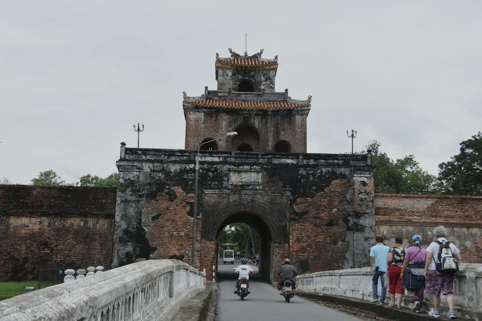
Imperial threshold
Ngọ Môn
The monumental southern gate frames the ceremonial approach to Huế's Imperial City.
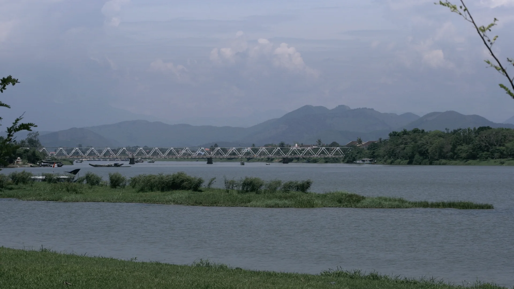
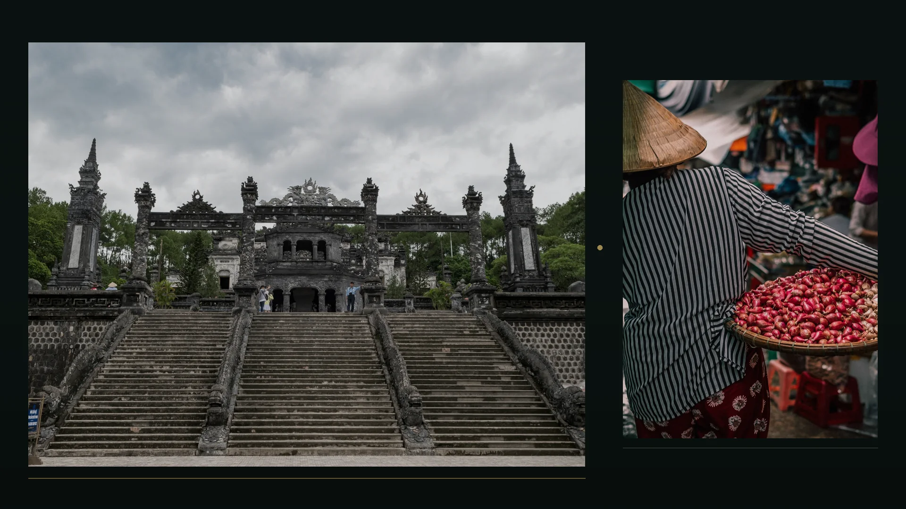

Imperial threshold
The monumental southern gate frames the ceremonial approach to Huế's Imperial City.
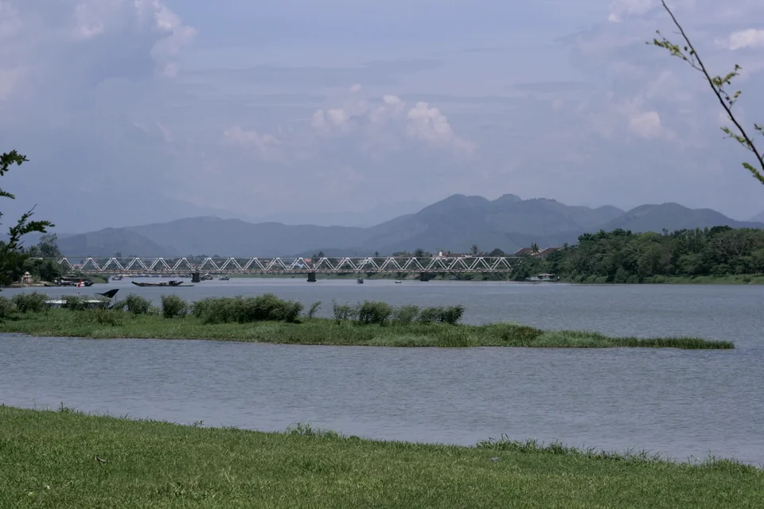
River spine
The long horizon that connects the citadel landscape with pagodas, gardens, and royal sites.
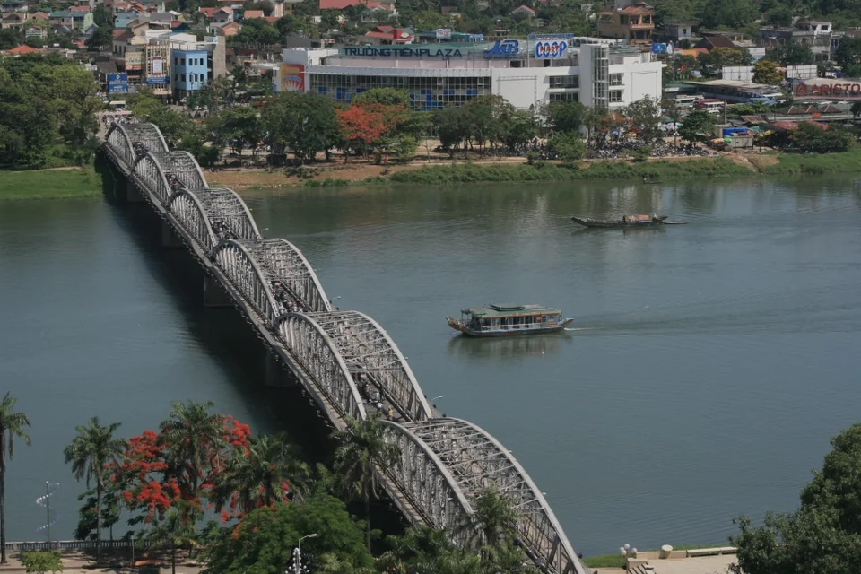
River crossing
A slender metal rhythm crossing the Perfume River through the center of contemporary Huế.
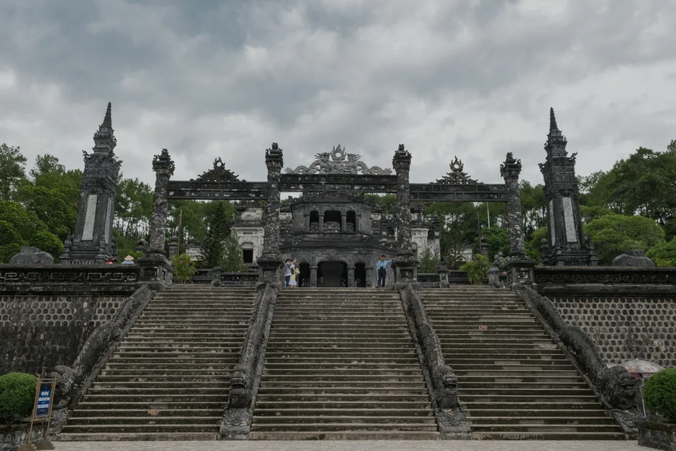
Royal landscape
A dense, highly ornamented royal complex set against the greener landscapes beyond the city.
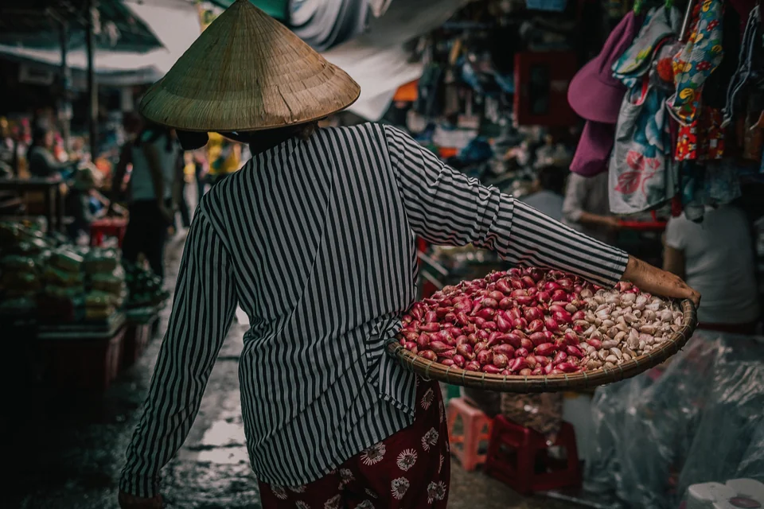
Living city
Everyday colour, food, trade, and movement keep the heritage city firmly in the present.
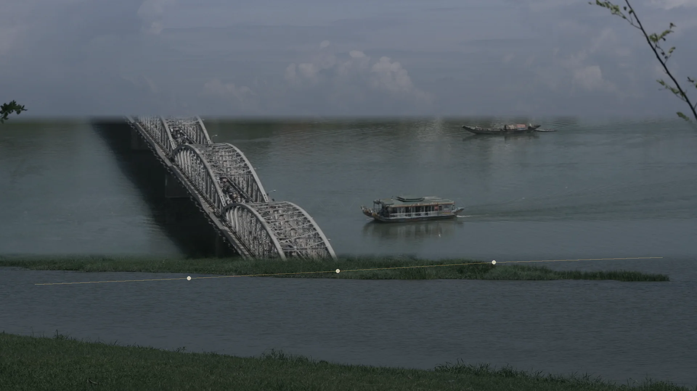
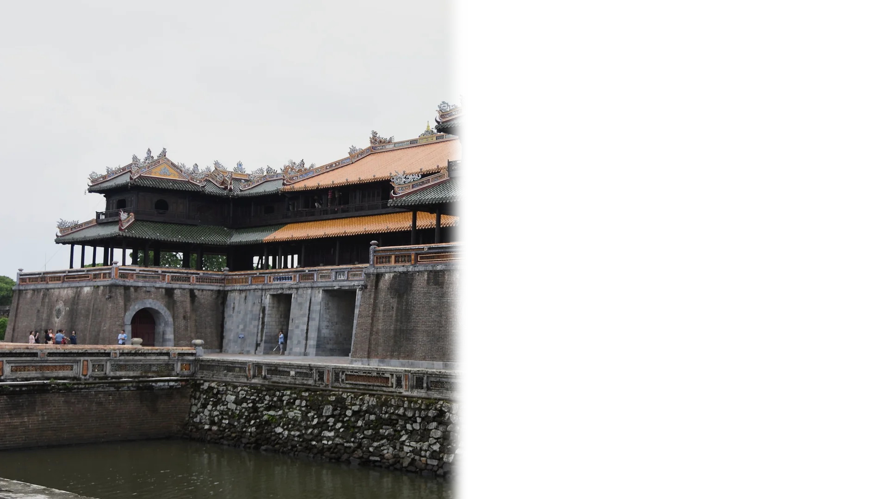
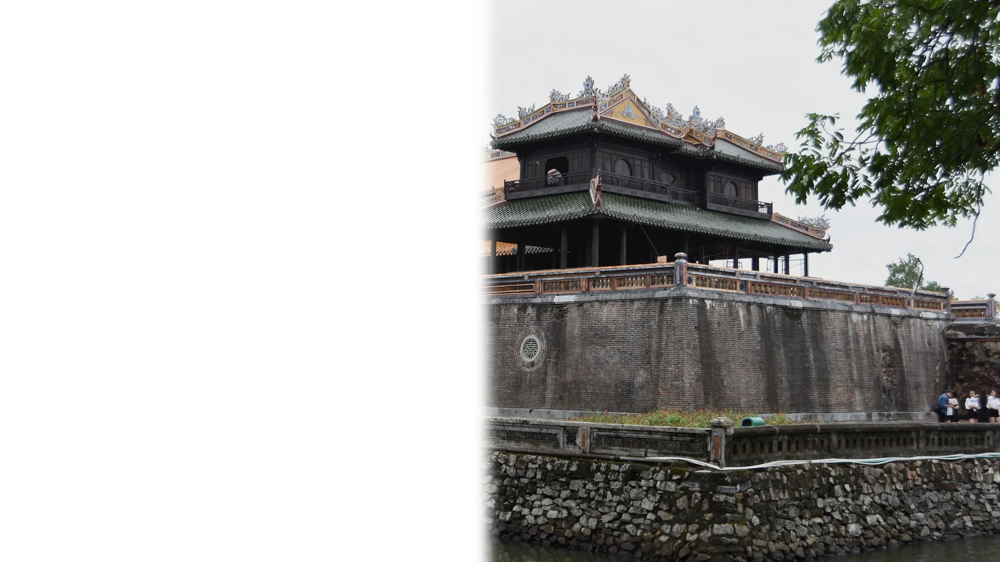
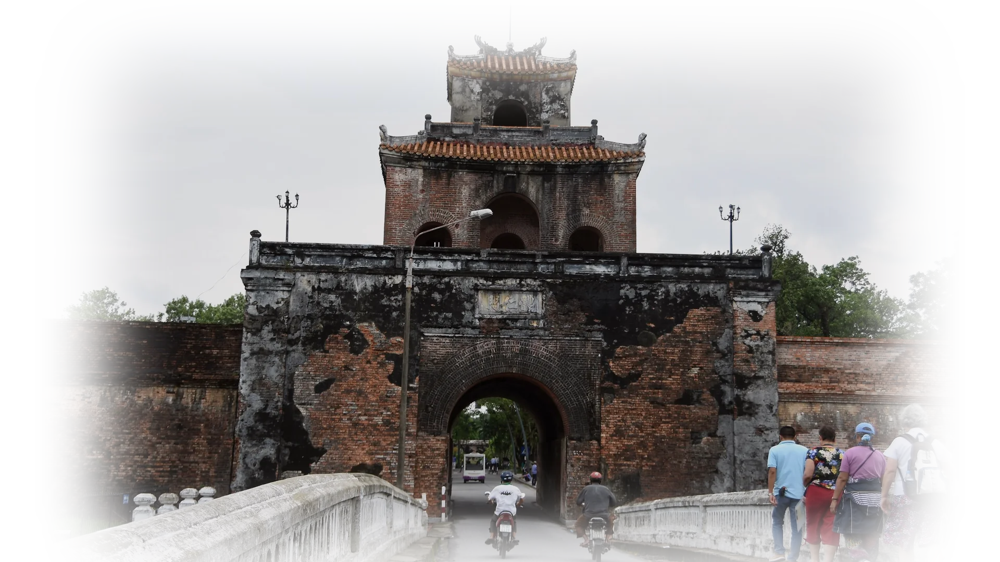
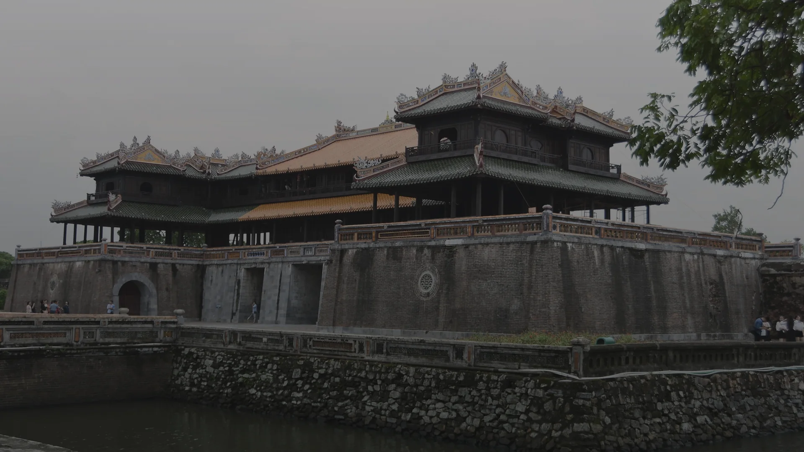
Between walls and water, Huế unfolds as a slow sequence of gates, reflections, gardens, markets, and royal landscapes.
01 · IMPERIAL THRESHOLD
Ngọ Môn opens toward the Imperial City, the ceremonial heart of the Nguyễn dynasty capital and the strongest architectural axis in this journey.
02 · RIVER LINE
The Perfume River turns monuments into a landscape: citadel walls, Trường Tiền, pagodas, gardens, and royal sites read as parts of one long horizon.
Follow the river routes